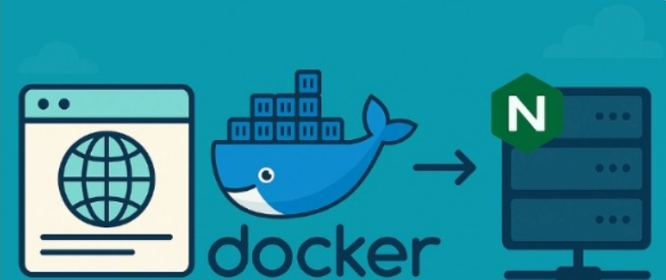

Vishnu Satheesh
Posted on May 31
How to Deploy a Web Application Using Docker and NGINX on Your Own Server
#webdev #devops
Deploying a web application doesn't need to be a complicated process. With Docker, NGINX, and your own server, you can get your app live in no time.
In this post, I'll show step by step how to serve an app with a domain, route traffic with NGINX, and run it all inside a Docker container. This guide is tailored for a Linux-based server.
Step 1: Setup Docker
First, set up Docker. A simple app is used as an example here, but feel free to use any application or codebase of your choice. Create a Dockerfile in the project directory to define how the app should be containerized.
Step 2: Build and Run the Docker Container (on your server)
Once the Dockerfile is created, the next step is to build the Docker image and run it to make sure everything works as expected before wiring it up to NGINX.
Conclusion
Deploying a web application using Docker and NGINX on your own server might sound intimidating at first, but once broken down, it is quite manageable. By containerizing the app, setting up NGINX as a reverse proxy, and linking everything together on your server, you gain full control over the deployment process.
Top comments (0)